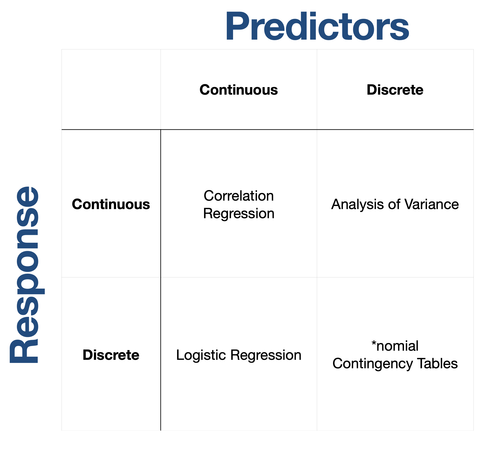

Homework
Statistical Inferences
We use statistical models to gain confidence about phenomenon in the world around us. The route we take in these analyses depending on the characteristics of the data we are using. In the general discussion of the nature of statistical inferencdes I used the following graphic.

The takehome here is that the kinds of hypotheses you will be addressing are dictated by the data and the nature of the question itself.
This homework is quite open-ended and will require you to start thinking about the totality of the question being asked. For the questions below, please include all of the following information.
- The specific null hypothesis being examined.
- A narrative about the data and why you decided to use that particular kind of analysis.
- Any preliminary evaluation of the data. For example,if you are going to use a parametric model, are the data normal? How do you know?
- What are the results of the statistical evaluation?
- What are your interpretations of the results?
These must all be done in a narrative context, I do not want to see any R chunks or raw output—it must all be integrated into the document and hidden from the reader.
Questions
Using the Rice Center Data, summarize the daily high, mean, and low for both air temperature and barometric pressure during the first week of February. Are these atmospheric variable independent?
Using data from the last two weeks of January, what is the relationship between all pairs of aquatic variables?
Is the average overnight air temperatures for Mondays in January above freezing?
Is there a difference in the total amount of rain at the Rice Center between days of the week?
Lifestyle choices may have a singificant impact on health. In the
datafolder, there is a data set consisting of data representing the proporiton of indiviudals who bike to work, smoke, and have heart disease in a set of replicate localities. To what extent is the prevailance of heart disease related to these lifestyle choices?